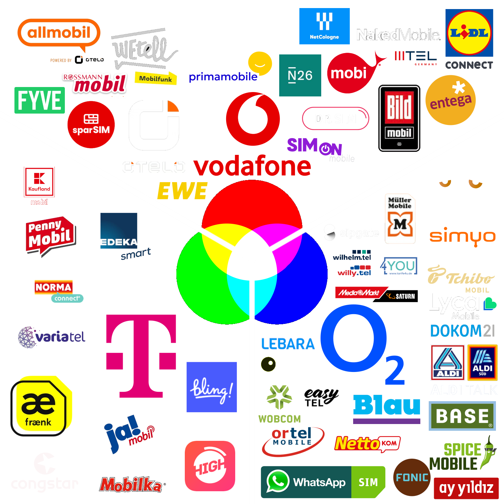

Mobilfunknetzausbau
in Deutschland
netzkarte.app
Diese Karte zeigt alle Mobilfunkmasten in Deutschland an.
Differenziert wird zwischen den drei großen Mobilfunknetzbetreibern
Telekom,
Vodafone und
o2.
Der jeweilige Betreiber ist wie folgt farblich markiert:
Die
Deutsche Telekom ist als
grün dargestellt,
da die Farbe
Magenta keine
RGB-Grundfarbe ist.
In dieser Grafik werden die Farbkombinationen der Netzbetreiber dargestellt:
